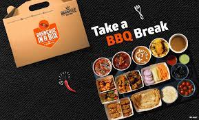

Barbeque Nation was founded in 2006 by one of our Promoters. We currently own and operate 150 outlets in India, 5 outlets in UAE, 1 outlet in Malaysia and 1 outlet in Oman.
One of the leading casual dining chains in India, Barbeque Nation pioneered the concept of “over the table barbeque” live grills embedded in dining tables – allowing guests to grill their own barbecue’s right at their tables.
CUISINE
Indian cuisine is a natural part of the diet in the markets in which the Barbeque Nation Restaurants operate. We continue to offer new menu options, both vegetarian and non-vegetarian, largely based on Indian cuisine and use seasonal customer preferences to introduce new dishes. We also run popular food festivals at our Barbeque Nation Restaurants, thereby offering our customers a range of Indian and international cuisines.
CUSTOMER'S FAVOURITE
Our fixed price ‘all you can eat’ concept at our Barbeque Nation Restaurants offers our customers a varying spread of consistently delicious food at a value-oriented price in a pleasant and casual dining environment. We believe that barbeque cuisine is distinctively attractive as compared with other dining options due to its DIY and cooked-at-the-table nature and the flexibility and fun of mixing and matching a wide variety of meats, vegetables, sauces and condiments to create dishes according to each diner’s individual tastes and preferences. In addition, fixed price dining is very popular amongst relatively larger groups, due to customers’ perception of value for money and the comfort of certainty over the bill amount irrespective of varying individual appetites and consumption
Our Barbeque Nation Restaurants typically offer customers at least five vegetarian and five non-vegetarian largely pre-cooked appetisers they can season and barbeque on a grill embedded in their table, an all-you-can-eat main course buffet and a selection of desserts.
BUFFET
NON-VEG

GOALS
Our core values prioritise being customer-focused to provide excellent products and service and employee-focused by maintaining a superior quality work environment. Our Company was ranked 13th among best companies to work for in India across all categories by Economic Times “Great Places to Work” survey for 2019 conducted by Great Places to Work Institute. Our Company was also voted among the top ten employers within the Indian retail industry for 2019 by Great Places to Work and 14th among best large workplaces in Asia by Great Places to Work Institute.